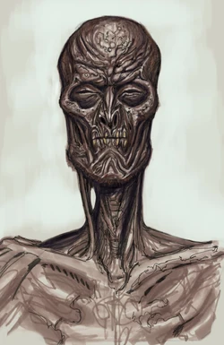
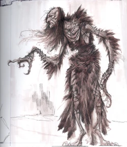
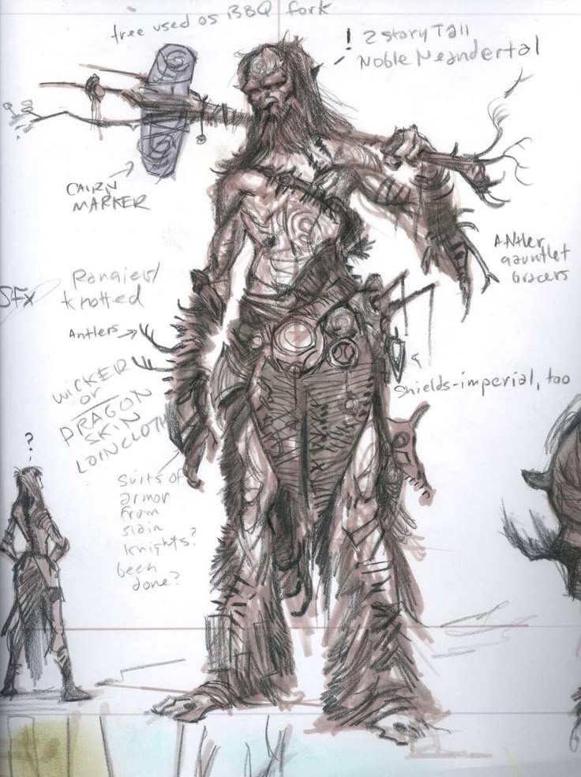

Enemies of Skyrim are a plenty.
Have you ever wondered what it's like to fight a lizard the size of a football field? Did you wonder what it feels like to slay the reanimated corpse of someone's family? Want to feel how our ancestors felt by hunting? All this and more can be achieved in Skyrim.
Commonly found near the burial cites and inside dungeons, Draugr are common undead folk that had the unfortune of rising in their slumber to attack any passing person. Kids are told scary stories about them, so that they would behave. People are warned about places with high activity. Just the idea of fighting someone's deceased loved one, would make most people incline to not interact with them, but people who have nowhere to go or have to hide out somewhere, will find places near those cites the perfect hideout.
While they are common, there exists variations of them. Some even could terrorise villages or even cities just by themselves, if they weren't bound to their places. Having caution and learning about differences would do good for any adventurer.

Few are more disgusting in their ways than hagravens. With their powerful magic and a habit of kidnapping common folk to use them as ingridients in their sick and twisted rituals, they've been a terror of Skyrim and her people for a long time. Even though they are rare to find, their magic is on another level and could obliterate common person into ashes. Staying as far away as possible is advised.
Even though most would stay away, it seems like the faction of Forsworn are mingling pretty well with these creatures. They seem to have symbiotic relationship where Forsworn group leader would give away his heart and recieve a brand new briar heart, which seems to make them stronger, and in turn, Forsworn people would kidnapp random folk for the rituals.

One of more gentler beings you can encounter in the wilds of Skyrim. Most just relaxing at their camp or walking around with their pet mammoths, from whom they get their sustenance in form of mammoth cheese. While I do say gentler, I mean only in a sense that they wouldn't go out of their way to kill you in the most gruesome way, but will have no qualms to send your body parts to space if you dare to come near their camp, thier mammoths or themselves.
